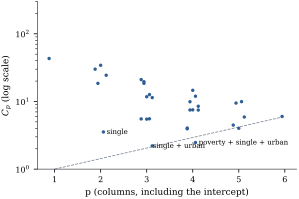
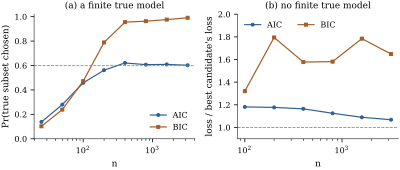
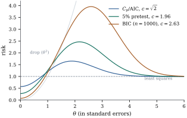

A selection criterion assigns a
number to each candidate model and picks the smallest.
estimates the
prediction error of Section 29.1, AIC a
likelihood-based discrepancy, and BIC the posterior
probability of the model. The first two nearly always
agree; the third answers a different question, and the
difference shows up in large samples.
29.2.1.
Candidates
The candidates are a finite collection of models
, , with
,
each fitted by least squares: 𝛍, with
residual sum of squares .
Typically
consists of the intercept and a subset of the columns of
a full model matrix of rank , and is
the usual variance estimate from the full model. The
data follow Eq. 29.1.1. By Theorem 29.1.1(c)
the scaled risk of candidate is
𝛍𝛍𝛍
(29.2.1)
variance plus squared bias. The bias term is the
noncentrality Eq. 19.1.1 of
the test of candidate against any correct
larger model.
29.2.2. Mallows’
Cp
Definition
29.2.1 (Mallows’ )
The
statistic of candidate is
With in
place of , is the
covariance-penalty estimate Eq. 29.1.3 of the
in-sample prediction error of candidate . The scaling makes
comparable with
.
(b) Write .
By Theorem 11.1.1(a),
applied to ,
the two terms are independent, ,
and
is noncentral with degrees of freedom
and noncentrality 𝛍,
so its mean is . By Lemma 14.1.3,
.
Hence and subtracting gives the
result.
(c) By the
definition of ,
.
Subtract .
By (b), estimating costs little
unless the full model uses up most of the data. Mallows
(1973) proposed plotting against : points near the line
have small
bias, and the lowest point estimates the best predictor.
By (c), adding
columns changes
by ,
so prefers the
larger model iff the statistic of the added
columns, with the full-model , exceeds .
29.2.3.
AIC
If is the true
density and a
model density, the Kullback–Leibler
divergence is zero iff (Kullback and Leibler
1951), and up to a term free of it is for a
new data set . A fitted model 𝛉
is therefore judged by the discrepancy𝛉 with
independent of .
The maximized log-likelihood evaluates the same function
at the data themselves, and is optimistic in the same
way as the training error.
Definition
29.2.2 (AIC and BIC)
For a model with free parameters and
maximized log-likelihood , In the normal linear model with unknown
variance,
and
(Theorem 7.3.1), so up
to a constant common to all candidates,
(29.2.2)
Akaike (1973, 1974) showed that is the leading term of
the optimism of for a correct
model fitted by maximum likelihood, in large samples. In
the normal linear model the optimism can be computed
exactly, without asymptotics.
Theorem
29.2.2 (The expected discrepancy of a normal
linear model)
Let 𝛍
with 𝛍 and , and let .
For the fitted density 𝛍,
Consequently
(29.2.3)
is an unbiased estimate of .
Proof. For a new data set 𝛍𝛆, 𝛍,
and as in Eq. 29.1.2𝛍𝛍𝛍.
So 𝛆 using 𝛍𝛍𝛆
when 𝛍. Now
𝛆
and 𝛆
are independent (Theorem 7.5.1), and
by Lemma 14.1.3.
Hence the second term has mean . For
the second statement, ,
and the identity
shows that .
The corrected criterion AICc is due to Sugiura (1978)
and Hurvich and Tsai (1989). Its extra term vanishes as
with
fixed, which
recovers AIC. It matters when is not small compared
with . With and , AIC charges , while the
exact charge in the proof is .
A simulation of data sets gives a
mean discrepancy of , equal to the
theorem’s value to two decimals. AIC underestimates it
by , and the
underestimate favours the larger models.
For a wrong candidate the penalty is no longer free
of 𝛍, and is an approximation,
justified when the candidate is close to the truth
(Konishi and Kitagawa 2008 discuss corrections). In
practice AIC and rank candidates
almost identically (Exercise (B1)).
29.2.4.
BIC
Suppose the candidates carry prior probabilities
, and the
parameters 𝛉
of model a prior
density 𝛉. The posterior probability of model is proportional to
,
where 𝛉𝛉𝛉 is the marginal likelihood of
the model. For the conjugate normal prior of Theorem 7.6.2 the
integral has a closed form. BIC is an approximation that
needs no particular prior.
Remark (Sketch: where comes
from). This is a heuristic derivation; Schwarz
(1978) proved the result for exponential families, and
Kass and Raftery (1995) give conditions and error terms.
Let 𝛉
maximize 𝛉𝛉, and let 𝛉
be the observed information, which for independent
observations grows like :
with of
order one. Expanding to second order
about 𝛉
(Laplace’s method, Tierney and Kadane 1986), 𝛉𝛉𝛉𝛉𝛉𝛉𝛉𝛉𝛉 Since , where the collects the prior
density at 𝛉,
and , none of
which grows with .
So
approximates , and with equal prior probabilities the
model with the smallest BIC is approximately the most
probable.
The error is of order one, so is
a crude estimate of a posterior probability, but the
rate is right: each parameter costs . For a “unit
information” prior the error is of order (Kass and
Wasserman 1995).
29.2.5. Three
criteria, one data set, one threshold
Adjusted of
Chapter
9 is sometimes used as a criterion too.
Proposition
29.2.3 (Adjusted as a
criterion)
Maximizing over candidates
that contain the intercept is minimizing ,
and for two nested candidates the larger has the larger
iff its
added columns have .
The threshold
is lower than any of the others, so chooses the
largest models. Since
(Theorem 19.1.2(c)),
minimizing
aims at the smallest bias, not the smallest
prediction error.
For two nested candidates, each criterion is a test
with its own critical value. Let the larger model add
columns, have
residual degrees of freedom , and let ,
so that .
The larger model is preferred by
The approximations use and
. With
, and , the exact
thresholds are
for AIC and
for BIC (), against . As
tests of one column, AIC acts at level and BIC at level
, close to the
conventional at
this sample size. BIC’s level falls as grows, and AIC’s does
not.
Example
(Violent crime in the states)
Return to the
states of Chapter 6 (the
District of Columbia left out) and take as response the
logarithm of the violent crime rate in 2009. The
candidate regressors are the percentages of adults with
a high-school diploma, of people below the poverty line,
of single-parent households, of white residents and of
urban residents, so there are candidates, all
with an intercept. The full model has and . The eight
candidates with the smallest are
regressors
single, urban
3
2.20
0.00
0.42
0.471
poverty, single, urban
4
2.47
0.09
2.42
0.480
single
2
3.54
1.49
0.00
0.445
high school, single, urban
4
3.94
1.72
4.05
0.463
high school, poverty, single, urban
5
4.01
1.57
5.82
0.474
single, white, urban
4
4.04
1.82
4.16
0.462
poverty, single, white, urban
5
4.47
2.09
6.34
0.468
high school, single
3
5.48
3.42
3.85
0.434
where is
the difference from the smallest value over all candidates. and AIC choose single
parenthood and urbanization; BIC drops urbanization;
adds
poverty. The first three rows are within two units of
each other on every scale, and none of the criteria
separates them convincingly. Figure 29.2.1 is Mallows’ plot.
Every candidate without single parenthood lies far above
the line : it
is badly biased.

Figure
29.2.1. against the number of
columns for the
candidate models for log violent crime in the states. The dashed
line is . The
three labelled models are the choices of BIC, of and AIC, and of
adjusted .
import itertoolsimport numpy as npimport statsmodels.api as smdata = sm.datasets.statecrime.load_pandas().data.drop(index="District of Columbia")names = ["hs_grad", "poverty", "single", "white", "urban"]y = np.log(data["violent"].to_numpy())n =len(y)def sse(cols): X = np.column_stack([np.ones(n)] + [data[c].to_numpy() for c in cols]) b, *_ = np.linalg.lstsq(X, y, rcond=None)return np.sum((y - X @ b) **2), X.shape[1]sse_full, P = sse(names)s2 = sse_full / (n - P) # sigma^2 estimate from the largest modelsst = np.sum((y - y.mean()) **2)rows = []for k inrange(len(names) +1):for cols in itertools.combinations(names, k): e, p = sse(cols) rows.append(dict(model=cols, p=p, sse=e, cp=e / s2 - n +2* p, aic=n * np.log(e / n) +2* (p +1), bic=n * np.log(e / n) + np.log(n) * (p +1), adjr2=1- (e / (n - p)) / (sst / (n -1))))for crit in ("cp", "aic", "bic"): best =min(rows, key=lambda r: r[crit])print(f"{crit:4s} chooses {best['model']}")print("adj R2 chooses", max(rows, key=lambda r: r["adjr2"])["model"])
29.2.6.
Consistency and efficiency
The thresholds explain the large-sample behaviour.
The statistic of
an irrelevant column stays of order one, so a growing
threshold such as eventually excludes it and a fixed one does
not; that of a relevant column grows like .
Proposition
29.2.4 (AIC and BIC in large samples)
Let the candidate set be finite and
fixed, and consider a sequence of designs and means with
. Let the
errors be independent and identically distributed with
mean zero and variance , and let 𝛍.
Call correct if 𝛍. Assume
that there is a correct such that every other
correct candidate has , and that
𝛍
for every candidate that is not correct. Select by minimizing
.
(a) If and , then . In
particular BIC () is consistent.
(b) If is constant, the
errors are normal, and is a correct candidate
with
and ,
then .
In particular AIC () is not consistent
when such a candidate is available.
(c)
(Efficiency, stated with a sketch.) Suppose
instead that no candidate is correct, and that the
candidate sets grow with so that the smallest
risk over candidates tends to infinity. Then, under
moment conditions on the errors and a condition limiting
the number of candidates, with known or
consistently estimated in , and for AIC with the
largest candidate dimension , the loss 𝛍𝛍
of the or AIC
choice divided by 𝛍𝛍
tends to one in probability (Shibata 1981; Li 1987). A
criterion with does not
have this property in general.
Proof. Throughout, 𝛍𝛍𝛆𝛆.
The last term is 𝛆𝛆,
where 𝛆
in probability by the weak law of large numbers and
𝛆,
so 𝛆
by Markov’s inequality. The middle term has mean zero
and variance 𝛍,
so it is by Chebyshev’s inequality.
(a) It suffices to
show
for each ,
since is
finite. For ,
𝛆𝛆,
so .
A correct . Then 𝛆𝛆,
and ,
because the ratio inside the logarithm is . Hence ,
which tends to in probability
since and .
A candidate that is not correct. Let 𝛍.
By the expansion,
with probability tending to one, so
with probability tending to one, where .
Then , which
tends to
because .
(b) Here 𝛆,
and
exactly for every
(Theorem 4.3.2).
With ,
Slutsky’s theorem gives
in distribution, and
in probability because
and for . So
in distribution. Now
iff ,
and is a
continuity point of the limit.
(c)Sketch. By Proposition 29.2.1(a),
is
unbiased for the scaled risk of each candidate, and
and
the loss minus the risk are sums of centred quadratic
and linear forms in 𝛆. The conditions make
these fluctuations small compared with the risks,
uniformly over the candidates, so minimizing is asymptotically the
same as minimizing the loss. Li (1987) gives such
conditions for ,
cross-validation and generalized cross-validation:
finite moments of order for the errors and
for some , where is the risk of
candidate per
observation. AIC differs from by terms of order
, which are
negligible when the candidate dimensions are (Shibata 1981). A
growing penalty
biases the choice towards candidates whose risk is
larger by a factor that does not tend to one, as Figure 29.2.2(b)
shows.
For AIC the limits in (b) are , and for : one extra column
is kept about one time in six however large the sample.
Nishii (1984) proved (a) and (b) for the normal linear
model.
Example
(Consistency against efficiency)
Panel (a) of Figure
29.2.2 uses six independent normal regressors, three
of them with slopes , and and three with slope
zero, and all
subsets as candidates. With the true subset is
found by AIC with probability and by BIC with
probability ,
because the smallest slope is hard to detect. With BIC finds it with
probability ,
while AIC stays at . That is the limit
,
because in large samples AIC keeps each irrelevant
regressor independently when its squared statistic exceeds about
.
In panel (b) the truth has regressors with
slopes , all
nonzero, and the candidates are the nested models
containing the first regressors, . No candidate is
correct. The ratio of the loss of the chosen model to
the smallest loss among the candidates falls for AIC,
from at to at , while for BIC it
stays between
and at every
sample size.

Figure
29.2.2. (a) Probability of selecting the true
subset among ,
when a finite true model exists; dashed: AIC’s limit
. (b) Loss of
the selected model relative to the best candidate, when
no candidate is true. simulated data sets
per point in (a), in (b).
import itertoolsimport numpy as nprng = np.random.default_rng(2903)beta = np.array([1.0, 0.5, 0.25, 0.0, 0.0, 0.0]) # three relevant, three irrelevanttrue_set = (0, 1, 2)subsets = [s for k inrange(7) for s in itertools.combinations(range(6), k)]def choose(X, y, penalty):"""All-subsets choice by n log(SSE/n) + penalty * (number of columns).""" n =len(y) best, arg = np.inf, Nonefor s in subsets: Xs = np.column_stack([np.ones(n), X[:, list(s)]]) b, *_ = np.linalg.lstsq(Xs, y, rcond=None) crit = n * np.log(np.sum((y - Xs @ b) **2) / n) + penalty * Xs.shape[1]if crit < best: best, arg = crit, sreturn argdef hit_rates(n, reps): X = rng.normal(size=(n, 6)) # the design, fixed for this n hits = np.zeros(2)for _ inrange(reps): y =1+ X @ beta + rng.normal(size=n) hits += [choose(X, y, 2.0) == true_set, choose(X, y, np.log(n)) == true_set]return hits / repsfor n in (50, 200, 800): aic, bic = hit_rates(n, 100)print(f"n = {n:4d}: AIC finds the true subset {aic:.2f} of the time, BIC {bic:.2f}")
The two properties cannot be combined: Yang (2005)
showed that no rule can be consistent and also attain
the best rate of prediction risk. The choice between AIC
and BIC is a choice of goal: prediction (AIC, , cross-validation) or
identifying a small true set of regressors (BIC).
29.2.7. Selection
in an orthonormal design
When the columns are orthonormal the search
disappears, and the criteria can be compared
exactly.
Proposition
29.2.5 (Selection as hard thresholding)
Let have
orthonormal columns, , put , and let be known. Among
all subsets of
the columns, is minimized (uniquely, with
probability one) by . The selected fit has
coefficients .
Proof. The projection onto the
columns in is
, so and the criterion is . A column lowers it iff
, and
ties have probability zero.
With known , and AIC take and BIC takes
.
Testing each coefficient at level and keeping the
significant ones (the pretest estimator
of Bancroft 1944) takes . This is the hard
thresholding of Theorem 27.4.2, and each
coordinate can be studied alone. With and ,
the risk of is
(29.2.4)
where is the
probability that the coordinate is dropped (Exercise (B2)).
Least squares has risk , and dropping the
coordinate always has risk .
Figure 29.2.3
shows the trade. At the risks are
for , for the pretest and
for BIC with
. (At zero
the risk equals the degrees of freedom of Proposition 29.1.3:
both are .) The curves cross at , and and peak at , and , at , and . A larger threshold
gains more at zero and loses more at moderate , and no threshold,
least squares included, is uniformly best. This is Theorem 19.1.5
again: dropping a coordinate helps iff , and the
data cannot tell which side of the boundary they are on.
Shrinkage avoids the bump: the James–Stein estimator of
Theorem 27.5.2 beats
least squares everywhere when .

c\}, Z\sim\Normal(\theta,1), for the thresholds of C_p and AIC, a 5\% pretest and BIC with n=1000. Least squares has risk 1 (dashed); always dropping the coordinate has risk \theta^2 (grey).">
Figure
29.2.3. Risk of hard thresholding , ,
for the thresholds of and AIC, a pretest and BIC with
. Least
squares has risk
(dashed); always dropping the coordinate has risk
(grey).
import numpy as npfrom scipy.stats import normdef hard_risk(theta, c):"""E(Z 1{|Z| > c} - theta)^2 for Z ~ N(theta, 1).""" D = norm.cdf(c - theta) - norm.cdf(-c - theta) # Pr(|Z| <= c): coordinate droppedreturn theta**2* D +1- D + (c - theta) * norm.pdf(c - theta) + (c + theta) * norm.pdf(c + theta)thetas = np.linspace(0, 6, 601)for label, c in [("C_p / AIC", np.sqrt(2)), ("5% pretest", 1.96), ("BIC, n = 1000", np.sqrt(np.log(1000)))]: r = hard_risk(thetas, c)print(f"{label:14s} c = {c:.3f}: risk at 0 = {r[0]:.3f}, "f"maximum {r.max():.3f} at theta = {thetas[r.argmax()]:.2f}")
29.2.8.
Exercises
A. Check your
understanding
Exercise
(A1)
In Example (Violent crime in the states)
the model with single parenthood and urbanization has
.
Compute its
from , and , and the statistic for testing
it against the full model.
Solution..
By Proposition 29.2.1(c),
, so
: the three
regressors left out together have an statistic below
one.
B. Practice
Exercise
(B1)
Let be any
fixed positive number and write .
Show that and conclude that with AIC
and differences
agree when every candidate’s residual mean square is
close to .
Exercise
(B2)
Derive Eq. 29.2.4. (Split
the risk according to whether the coordinate is kept,
and use .)
Solution. Let . When the
coordinate is dropped (,
probability ) the
loss is ;
when kept it is . So .
The event
is , so ,
using .
Exercise
(B3)
Show that AIC prefers the larger of two nested
candidates iff ,
and BIC iff .
Find the limits of both thresholds as with and fixed.
C. Going deeper
Exercise
(C1)
In panel (a) of Example (Consistency against efficiency),
suppose the three regressors with zero slopes are
orthogonal to each other and to the relevant ones. Show
that for large
AIC selects the true subset iff each of them has squared
statistic below
about , and deduce
the limit .
Solution. Every candidate that
omits a relevant regressor loses with probability
tending to one (Proposition 29.2.4,
proof of (a), second case, which holds for any with ). Among
candidates containing the relevant block, orthogonality
makes 𝛆, and with
independent. AIC adds iff this exceeds , so it
chooses up to
, and chooses
with
probability tending to .